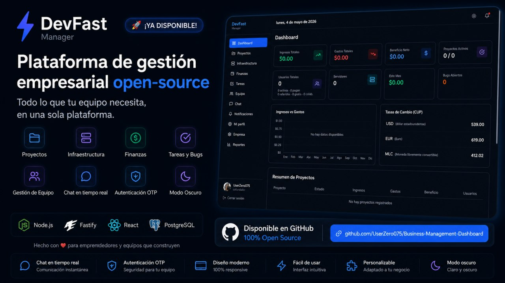
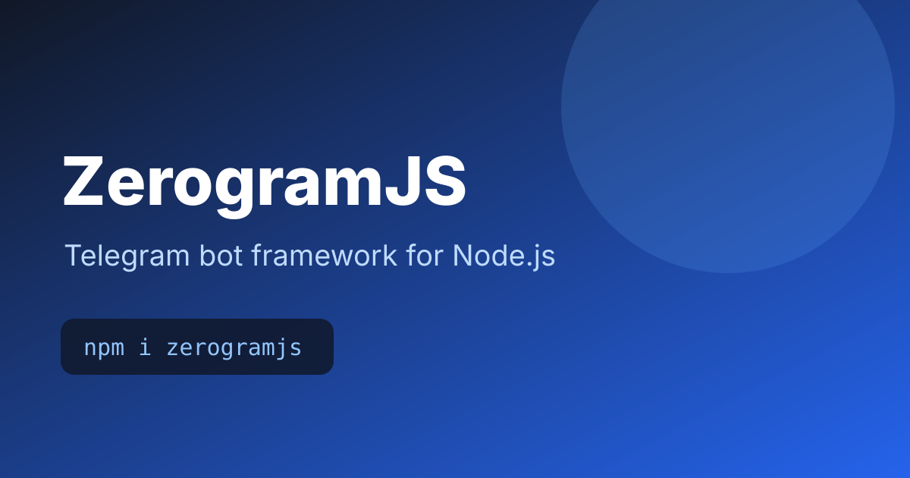
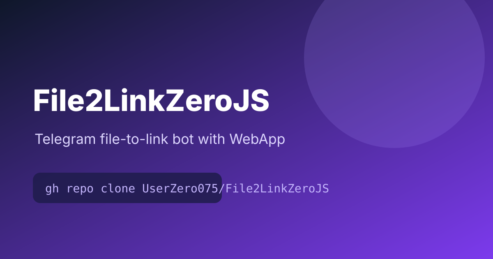
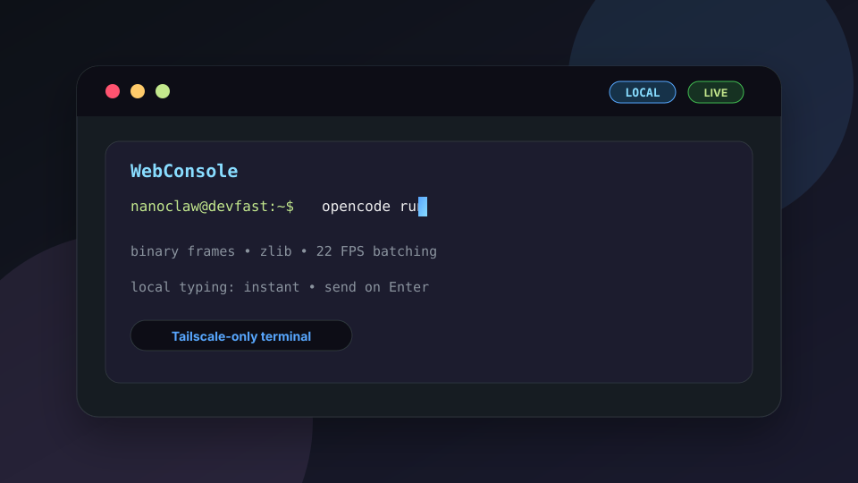
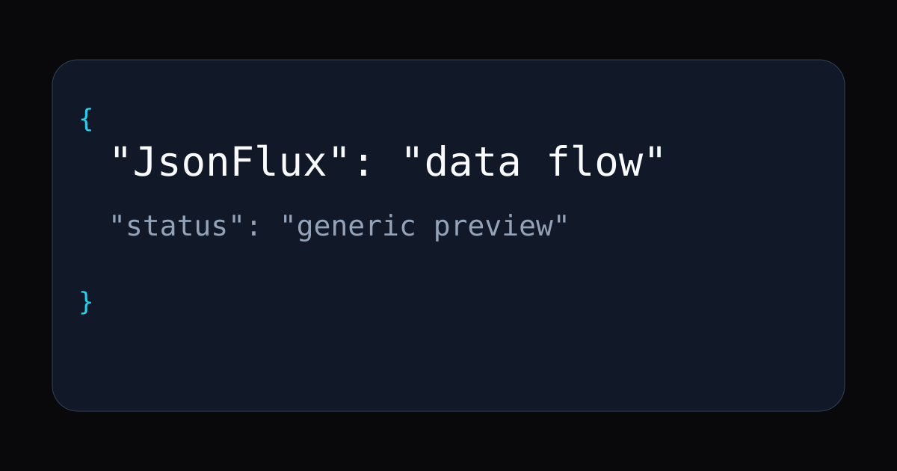

I'm Marlon Sarduy Machado, a Cuban programmer from San José de las Lajas, Mayabeque. I build bots, APIs, web apps, automation tools and Linux/VPS infrastructure, mainly with Node.js, TypeScript, Python and modern web stacks.
I co-founded DevFast with Yama and use it as my personal technical brand/business: a place where I experiment, ship tools, manage infrastructure, offer digital services and turn practical problems into software.
Outside code, I write. My first public poetry project is Versos de Mi Corazón Náufrago; Antología de Poesía Breve, published on Wattpad.





I write poetry, and this is my first public poem collection on Wattpad: Versos de Mi Corazón Náufrago; Antología de Poesía Breve.
Read on Wattpad